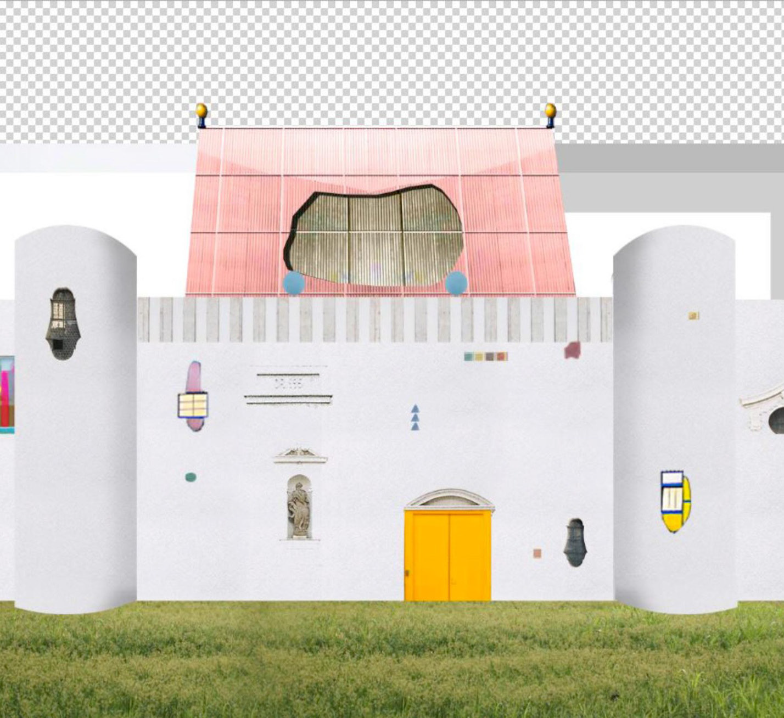
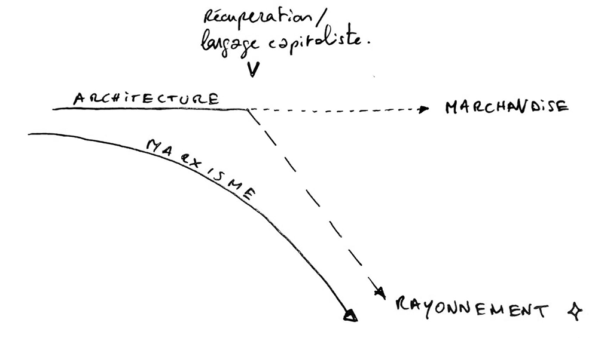
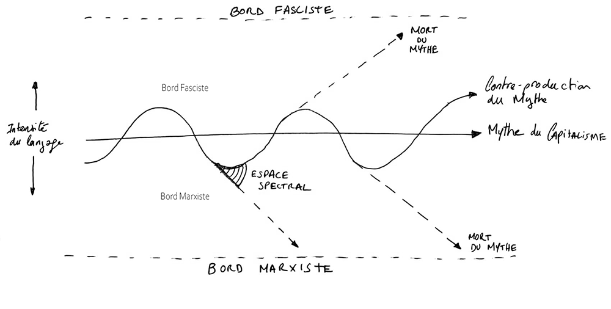

Hantologie critique de l'architecture
Lola Burdin & Noam Gueguen
Club ASAP 11
septembre 2026
Temps de lecture : 10 min
On passe notre vie à collectionner des objets mystiques. Nos feed Instragram l’ont bien compris, on voit défiler des matcha verts gargouillants, Zara Larsson et Sabrina Carpenter pimpées de paillettes et le retour de la littérature fantasy. Avec nos copains, on fréquente des friperies, on décore nos appartements avec toutes sortes de marionnettes, et même dans nos projets d’architecture on s’amuse à cacher des formes géométriques et des couleurs criardes.
Courrier International parle de la tendance whimsy inspirée du folklore, comme une manière “d’apporter de la fantaisie, une petite touche de magie en cultivant des activités simples, en réenchantant des rituels quotidiens ou en agrémentant son chez-soi d’objets colorés ou amusants”.
L’idée de cette esthétique mystique est un état d’esprit, un art de vivre à part entière qui marque un rejet du lissage esthétique propre au capitalisme.
La figure du gobelin, créature espiègle, malicieuse et manifeste d’un désordre violent, s’est peu à peu figée dans une sorte de mythologie intime et personnelle nourrie par des obsessions, issue de notre propre culture populaire.
Mais que reste-t-il du gobelin quand il cherche à échapper au mythe du capitalisme ?
I. LE MYTHE ET LES OBJETS
Comment tisser le lien entre nos collections d’objets et les mythes qui habitent notre cosmos ?
Les mythes semblent s’incarner dans ce que Jean Baudrillard nommera plus tard le système des objets : un réseau d’artefacts qui traduit les mythes en une réalité matérielle. L’architecture, en tant qu’organisation du cadre de vie, se révèle comme étant les monuments de ce système. Si on assiste aujourd’hui à la fascination pour les petits objets magiques, dans le but de résister à la froideur de la rationalité, il s’opère néanmoins un glissement identifié par Karl Marx avec le concept de fétichisme de la marchandise.
Jacques Derrida explique ce concept comme une métamorphose de l’objet matériel à l’objet immatériel, c’est- à dire de la valeur travail et sociale d’un objet, à un langage qu’on lui insuffle : sa valeur marchande. Tout objet acquiert donc une âme, et le mythe du capitalisme se retrouve capturé dans l’artefact. L’objet devient le contenant d’un pouvoir magique auquel l’individu s’assujettit volontairement. Suivant les propos de Marx, si notre propre quête de subversion s’incarne dans un objet physique, l’objet finit toujours par s’émanciper des conditions matérielles et sociales de sa production pour se retrouver dans le même processus.
«La forme du bois, par exemple, est modifiée quand on en fait une table. La table n’en reste pas moins du bois, chose sensible ordinaire. Mais dès qu’elle entre en scène comme marchandise, elle se transforme en une chose suprasensible.
Elle ne tient plus seulement debout en ayant les pieds sur terre, mais elle se met sur la tête, face à toutes les autres marchandises, et sort de sa petite tête de bois toute une série de chimères qui nous surprennent plus encore que si, sans rien demander à personne, elle se mettait soudain à danser.»
Karl Marx, Le Capital
L’architecture quant à elle, en tant que production du bâti, possède le pouvoir de figer le mythe dans la durabilité de la pierre ou de la typologie. Dans la manipulation des typologies : Tout comme la « maison basque » citée par Barthes, l’architecture contemporaine extrait l’enveloppe mythique des formes historiques ou marginales (la cabane, le monastère, l’atelier d’artiste, la ruine).
Ce système d’objets architecturés crée ainsi l’illusion d’un cosmos habité par le sens. L’alliance entre l’artefact magique et l’espace qui le met en scène semble offrir un refuge contre l’aliénation moderne. Cependant, cet ancrage matériel montre rapidement ses limites. En s’insérant dans le monde physique, le mythe accepte les règles du jeu du monde matériel : celles de la propriété et de la spatialisation. Dès lors que l’aspiration à la fuite ou au féerique s’exprime à travers un aménagement spatial, elle cesse d’être une force mouvante et indisciplinée.

II. LA FÊTE EST FINIE
Existe-t-il dans l’univers une distinction suffisamment nette entre le mythe du capitalisme et les mythes qui le contre produisent ?
Nous avons vu que les mythes se développent et prolifèrent tout autour de nous au travers d’un système d’objets en transcendance qui est fixé par le langage. On pourrait alors distinguer deux types de mythes :
1. Les mythes qui nous ventriloquent. On pourrait alors parler du mythe global du capitalisme (les architectures de promoteurs, les constructeurs de lotissements), c’est une figure de pouvoir qui nous dépossède pour assurer l’impérialisme. On assiste alors à la production en masse du langage qui sépare le corps de l’esprit.
2. Les mythes qui contre produisent le monde capitaliste. On pourrait alors parler des mythes qu’on se racontent (les cabanes de la ZAD, l’urbanisme transitoire, les architectures de grilles), c’est une sorte de double qu’on façonne, qu’on invoque pour tenter de neutraliser une hégémonie ou de fuir le monde. On assiste alors à une tentative de libérer le langage, d’en inventer un autre, de se le réapproprier.
Mais alors que le mythe du capitalisme nous hante dans notre rapport à notre intimité, à notre quotidien, il nous semble important de nous poser une question : existe-t-il dans l’univers une distinction suffisamment nette entre le mythe du capitalisme et les mythes qui le contre produisent ?
Antonin Artaud n’en est pas sûr : on lui a volé sa chair, son corps et sa voix. On l’a dépossédé de lui-même jusqu’à sa mort.
Puisque les mythes sont figés par le langage, il nous semble alors important de revenir à sa définition. Pour Jacques Derrida, le langage est indicatif. Il a le pouvoir de nommer le monde tout en restant au bord du monde. A travers lui l’autoritarisme est porté, la vérité s’ordonne et la société s’organise.
Mais ce même langage est un pouvoir d’illusion et d’erreur, nous le rappelle Simone Weil. Nous vivons dans une fiction où le langage est gouverné à distance par des forces extérieures puissantes, qui nous dominent afin de maintenir un système qui sert l’ambition bourgeoise. Ces créatures gardent alors avec elles le réel. Le langage semble alors être une figure emprisonnée dans l’épaisseur inerte du corps du capitalisme, jusqu’à sa propre obsolescence.
Contreproduire un mythe semble alors insuffisant pour s’échapper du mythe du capitalisme. L’architecture qui pense se retrouver au-dessus des lois est piégée. Tout en elle inspire la ruine.
III. LE MYTHE OU LA MORT
Puisque l’architecture meurt dès lors qu’elle s’incarne, il faudrait imaginer une architecture qui puisse dépasser le langage. Dans quel espace est-ce possible ?
La pensée de Jacques Derrida, développée dans Spectres de Marx, interroge la manière dont la figure de Karl Marx et sa critique du capitalisme continuent de rayonner, alors même que le marxisme a été déclaré mort après la chute du bloc soviétique. C’est précisément parce qu’il est maintenu en état de mort que Marx échappe à la récupération définitive par le capitalisme, et que son rayonnement continue de nous parvenir.
Nous suggérons alors, qu’avant même que l’architecture entre en scène comme marchandise, qu’elle se transforme en étoile (coup de théâtre). Et ce serait alors précisément dans cet espace spectral, hors-temps, que le rayonnement autour duquel nous tournons pourrait devenir habitable. Ces lumières pourraient jaillir sur terre pour nous transporter des informations.

Le problème est qu’on est pris dans un système capitaliste qui avant même l’édification d’une architecture a dépassé le stade de sa marchandisation. Il ne suffit pas d’habiter des terrains vagues, des infrastructures désaffectées, des maisons abandonnées et des interstices pour se défaire du mythe du capitalisme. L’architecture est en état de ruine dès sa marchandisation et se poursuit dans un cycle de valorisation/dévalorisation dû à son langage architectonique.
Est-il alors possible de percevoir un rayonnement de l’architecture en ruine ?
Nous pourrions imaginer qu’à chaque instant l’architecture puisse suivre une tangente qui s’extrait du mythe dominant, ouvrant cet espace spectral, hors temps. L’architecture ne serait plus produite par un langage architectonique ventriloqué mais par des d’intuitions et de la rêverie, conduisant à une révolution intime.

Pour nous, l’architecture de grilles (que nous aimons tant) ne trouve pas sa liberté dans sa morphologie mais dans l’ouverture de potentialités, cachées dans nos manières d’habiter (les réseaux, les structures). Les architectures de l’oubli, quant à elles, sont le reflet d’un épuisement du langage. La voix dominante a perdu au profit de la voix du mythe.
Alors, il faudrait continuer à rêver jusqu’à ce que toutes les étoiles explosent et illuminent nos rêveries.
L'ensemble des articles issus du club asap 02 sont disponibles ci-dessous:
| # | Titre | Auteur | |
|---|---|---|---|
| 110 | Fact-Checking & Reality Shifting | Louis Fiolleau | Club #11 |
| 111 | Hantologie critique de l'architecture | Lola Burdin & Noam Gueguen | Club #11 |
| 112 | Les Grands Travaux mitterrandiens | Louis Voyer | Club #11 |
| 113 | Liturgiques Excel-tiques | Sirine Ammour | Club #11 |
| 114 | Movi(e)ng Home | Antoine Maisonneuve | Club #11 |
| 115 | Mythes Historiques | Clarisse Protat | Club #11 |
| 116 | Habiter le trouble | Mateo Narejos | Club #11 |
| 117 | Objectification, concrétisation & rebond magique | Hugo Forté | Club #11 |
| 118 | Profaner la ville rationnelle | Marie Frediani | Club #11 |